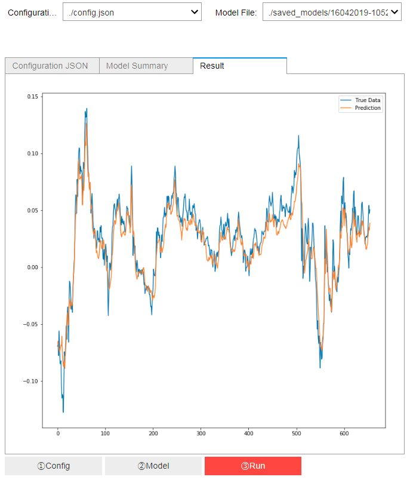

Jupyter Notebookで深層学習モデルのGUIを作る
シーン設定
ある問題に対して、深層学習モデルを作成しました、それで内部で使ってもらうとき、使う人がpythonやプログラミングに詳しくない（上司？笑う）、そのとき簡単で使えるGUIが欲しい、しかしC++やpygameなどでGUI作るのがメンド、如何すればいいの？
Jupyter ipywidgets
先に、完成品はこんな感じ。 
Imports
#基本機能とIO
import os
import json
import matplotlib.pyplot as plt
from pprint import pprint as jprint
#深層学習モデル
from core.data_processor import DataLoader
from core.model import Model
#JupyterUI関連
import ipywidgets as widgets
from IPython.display import display
機能クラス
いろいろ試作で分かったことはwidgetsの機能methodに引数がないように設計すれば、簡単になる、それのため以下のクラスを作成しました：
class GUI_DI():
def __init__(self):
self.config_file = self.config_loader()#設定ファイルPATHの読み込み
self.model_file = self.model_loader()#モデルファイルPATHの読み込み
self.pmodel = Model()#モデルクラスの作成
@staticmethod
def show_config(cls, config_file):
"""
選択した設定ファイルの内容を出力、確認用
"""
cls.configs = json.load(open(config_file, 'r'))
jprint(cls.configs)
cls.data = DataLoader(
os.path.join('data', cls.configs['data']['filename']),
cls.configs['data']['train_test_split'],
cls.configs['data']['columns'])
@staticmethod
def load_models(cls, model):
"""
選択した学習済みのモデル読み込みまたその構造を出力、確認用
"""
cls.pmodel.load_model(model)
print(cls.pmodel.model.summary())
def config_loader(self):
"""
設定ファイルのListを作成
"""
file_list = []
for file in os.listdir("./"):
if file.endswith(".json"):
file_list.append(os.path.join("./", file))
return file_list
def model_loader(self):
"""
学習済みのモデルファイルのListを作成
"""
file_list = []
for file in os.listdir("./saved_models/"):
if file.endswith(".h5"):
file_list.append(os.path.join("./saved_models/", file))
return file_list
def generate_data(self):
"""
学習済みのモデルで使うデータ作成
"""
if self.data is not None:
self.x_test, self.y_test = self.data.get_test_data(
seq_len = self.configs['data']['sequence_length'],
normalise = self.configs['data']['normalise'])
else:
print("Please Load Config File First")
def predict(self):
"""
学習済みのモデルを使う
"""
self.predictions = self.pmodel.predict_point_by_point(self.x_test)
def plot_it(self):
"""
結果を図にする
"""
predicted_data, true_data = self.predictions, self.y_test
fig = plt.figure(facecolor='white',figsize=(12,12))
ax = fig.add_subplot(111)
ax.plot(true_data, label='True Data')
plt.plot(predicted_data, label='Prediction')
plt.legend()
plt.show()
Jupyterとclassの連携
見た目
先に、クラスの実体を作りましょう
gdi = GUI_DI()
それで各widgetsを作ります
item_layout = widgets.Layout(margin='0 0 50px 0')#layoutの設定
config_output = widgets.Output()#設定ファイルの出力セクション
config_output.clear_output()
model_summary = widgets.Output()#モデル構造の出力セクション
model_summary.clear_output()
plot_output = widgets.Output()#最終図の出力セクション
plot_output.clear_output()
show_c = widgets.Button(description='①Config')#設定ファイルの出力ボタン
show_m = widgets.Button(description='②Model')#モデル構造の出力ボタン
run_m = widgets.Button(description='③Run', button_style='danger')#モデルを動かすボタン
さらに、人が選択できるようにまた選択したファイルが目標ファイルになるため
config = widgets.Dropdown(
options=gdi.config_loader(),
description='Configuration File:',
disabled=False,
) #gdi.config_loader()の内容がDropListのないようになる、そして選択された内容（PATH to file）がconfigとして
model = widgets.Dropdown(
options=gdi.model_loader(),
description='Model File:',
disabled=False,
)#gdi.model_loader()の内容がDropListのないようになる、そして選択された内容（PATH to Model）がmodel として
見た目のために、Boxに分ける